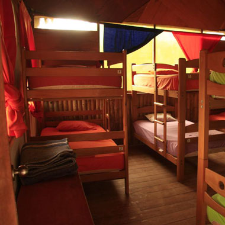
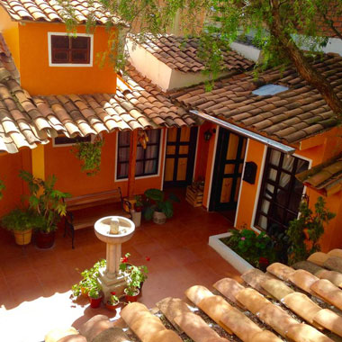
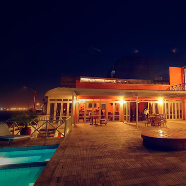
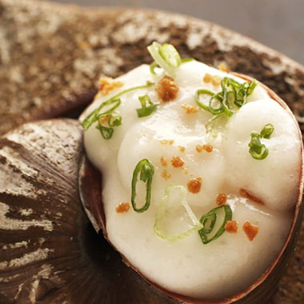
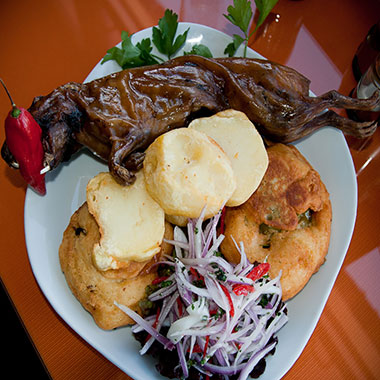
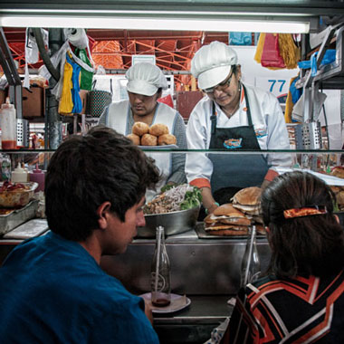
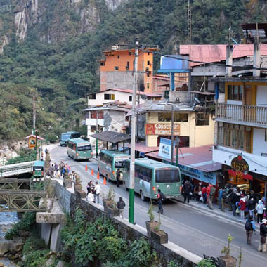
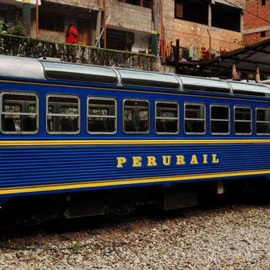
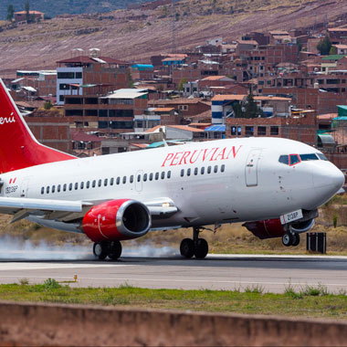

Where to stay
Hostels
Called hostals in Peru, most of Peru’s hostels are unaffiliated to Hostelling International. Peru’s hostels are relatively cheap and reliable; expect to pay S/15–25 ($6–9) for a bed. All hostels are theoretically open 24 hours a day and most have cheap cafeterias attached. They are always great places to meet up with other travellers and tend to have a party scene of their own.
Find out more about hostels in Peru here
Guesthouses
Guesthouses sit somewhere between hostels and hotels. They rarely have packed dorm rooms, relying instead on a selection of one- to four-bed rooms, each with its own characteristics. Guesthouses tend to be family-run, giving them a relaxed and homely feel. Service is informal, with standards varying greatly depending upon the whims of the owner.
Find more information on guesthouses here
Hotels
In Peru, you can find a good, clean single or double room in a mid-range hotel with a private bathroom, towels and hot water, for S/55–160 ($20–60). There are quite a few five-star hotels nearly all in Lima, Arequipa, Cusco, Trujillo and Iquitos. Even four-star hotels offer excellent service, some fine restaurants and very comfortable rooms.
To learn about a completely transparent hanging hotel room hanging on a cliff, click here
Where to eat
Restaurants
Expect a wide range of prices in mid-range and upscale restaurants in Peru, again depending on location and sophistication. But if a restaurant looks too fancy for your budget, always check the menu anyway. Some places look expensive but are actually quite affordable; the reverse is also true.
Festivals
Every September, Peruvian restaurants and famous chefs from around the world gather in Lima for a celebration of Peruvian cuisine. The word mistura means "mixture" in Portuguese. And the cuisine served at Mistura, the biggest food festival in Latin America, certainly reflects a fusion of cultural dishes.
Street
The food scene in Lima is hot, but it’s not just a flash in the stove-top pan. Street food superstars are keeping up gastronomical traditions that have been around for generations. The street-side grills normally come out as the sun begins to set, serving a range of items from the early evening to nine or ten at night.
Getting around
Bus
Peru’s buses are run by a variety of private companies, all of which offer remarkably low fares, making it possible to travel from one end of the country to the other (over 2000km) for under $35. At least one bus depot, or stopping area, can be found in the centre of any town.
Train
Peru’s spectacular train journeys are in themselves a major attraction and you should aim to take at least one long-distance train ride during your trip, especially as the trains connect some of Peru’s major tourist sights. For all train journeys, it’s advisable to buy tickets a week or two before travelling and even further in advance during high season.
Fly
There’s a good domestic air service in Peru these days. Some places in the jungle can only sensibly be reached by plane and Peru is so vast that the odd flight can save a lot of time. Most tickets for all these domestic airlines can be booked and bought online as well as from travel agents or airline offices in all major towns.